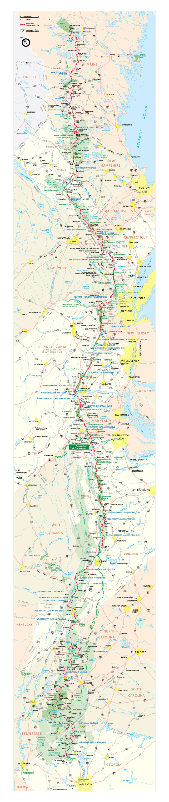
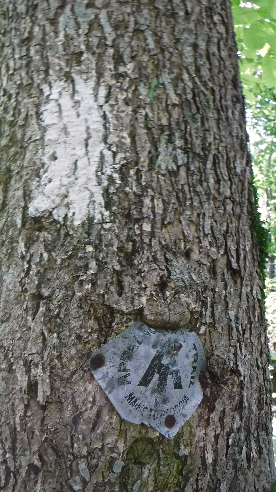
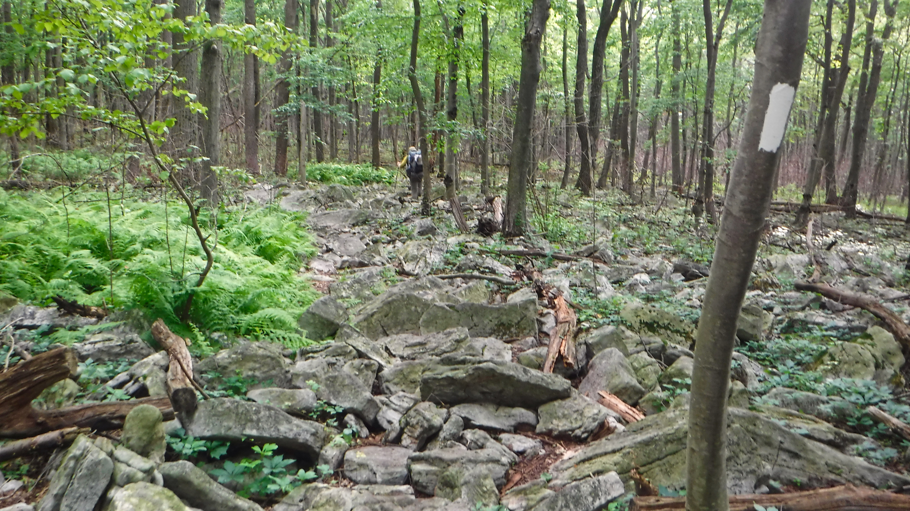

Lessons Learned Hiking the
Appalachian Trail
Jim Smith
Oak Ridge, Tenn.
Oak Ridge National Lab
Trail Name: Gravity
2,189.8 miles

Springer Mountain, Georgia
April 3, 2017
Mt. Katahdin, Maine
Oct. 4, 2017


Misconceptions
It's not really a 6-month hike.
It's several 3-5 day hikes.
Misconceptions
There's no need for a gun.
Animals are more afraid of you than you are of them
and you're safer in the forest than at home.
Surprises
Heightened sense of smell.
You don't often notice your own stink.
Day hikers are laundry comets.
Surprises
I didn't expect to learn anything about myself.
I did.
Seven Lessons
Lesson 1
Be prepared for what you think you fear.
Be fearless in your heart.
Lesson 2
If you don't know where you are going, any road will take you there.
Sometimes that's a good thing.
Lesson 3
Maine isn’t going to walk to you.
Lesson 4
No pain, no rain, no Maine.
Pain is mandatory. Misery is optional.
Embrace the suck.
Lesson 5
Embrace your community.
We are all invested in each other's success.
Experiences are better when they're shared.
Lesson 6
Hike your own hike.
Leave no trace.
Lesson 7
If it's important to you, make it important.
If it's
really
important to you, make it the most important thing you do.
Thru-hikers never die,
they just smell that way.
hikewithgravity.com
@hikewithgravity